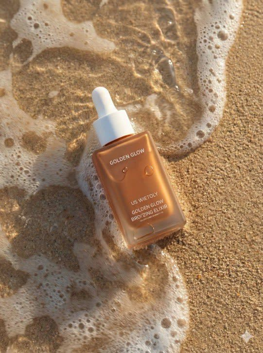

Summer Skincare Product Photography
PRP-007Prop stylingNano Banana Proby William AIAugust 7,

Professional skincare product photography featuring a bronzing elixir on a sun-kissed beach with gentle ocean waves and foam.
Prompt
Ultra-realistic summer skincare product photography of a bronzing drop bottle named "{argument name="product name" default="Golden Glow - Bronzing Elixir"}", rectangular matte bottle in {argument name="bottle tone" default="warm sun-kissed bronze tone"} with a clean white cap, placed diagonally on wet beach sand as a gentle ocean wave washes over it, delicate sea foam and tiny bubbles surrounding the base, water partially flowing across the label, fine sand texture visible beneath shallow clear water, golden sunlight casting natural highlights and soft shadows, high-detail water ripples and realistic foam patterns, fresh summer aesthetic, minimal clean branding centered and sharp, warm golden-hour beach lighting, cinematic top-down flat lay composition, natural reflections on wet surface, editorial beauty campaign style, ultra-detailed, photorealistic 8K, soft warm color grading, luxury skincare advertisement Aspect ratio 4.5Tags: product, fashion